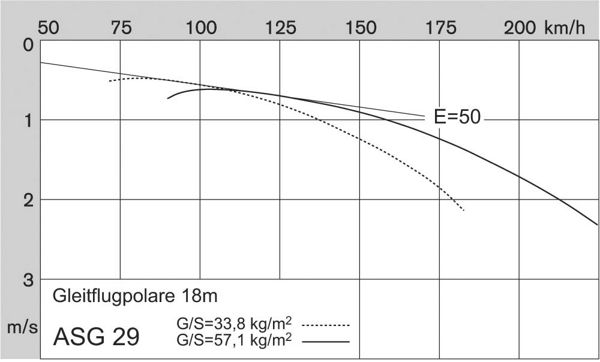

Simply put, the polar curve for an aircraft shows you how fast the aircraft will sink in the air for each forward speed, e.g. as for the Schleicher ASH 25 below:
This curve will be different for each model of aircraft, with a high-efficiency aircraft sinking less than a typical aircraft at the same forward speed. By this measure sailplanes are much more efficient than powered aircraft. For example, a modern glider of 18m span flying at 50 knots in still air will be sinking at about 1 knot and will be said to have a glide ratio of 50:1.
The glide performance of a given sailplane will alter according to its all-up weight and also its flap setting. Greater weight and/or a negative flap setting pushes the entire curve down and to the right, i.e. the glider can fly faster for a given amount of sink. This advantage in high-speed flight is complimented with a significant disadvantage when flying slowly. Many gliders carry water ballast, e.g. the ASW28 can carry 200Kg of water even though the aircraft has an empty weight of only 240Kg. This ballast provides exceptional high-speed performance but can be dumped in weak conditions. A pilot flying a sailplane with flaps will routinely be pushing the aircraft into negative flap when flying fast between thermals, and will pull the flaps back into a high positive setting when circling in a thermal. Flap settings may be referred to as (in order) Landing, Thermalling, Zero, Negative One, Negative Two. For any given speed there is an optimal choice for flap setting.
The polar curve at the top of this page is for the Schleicher ASH 25 25-meter high-performance sailplane which has flaps and carries water ballast:
The polar curve for the 25-meter ASH-25 shows a sink rate of 2m/s at a flying speed of 200km/h (In imperial measures that's 3.9knots sink at 108knots) for a glide ratio of about 28:1.
For comparison the polar curve below for the 18-meter ASW-29 shows it sinking at 1.75m/s at the same 200km/h flying speed, for a glide ratio of about 32:1. Counter-intuitively the cheaper smaller 18m sailplane is better at 200km/h than the ASH-25 25m sailplane. However, if conditions turn weak then the ASH-25 will win.
